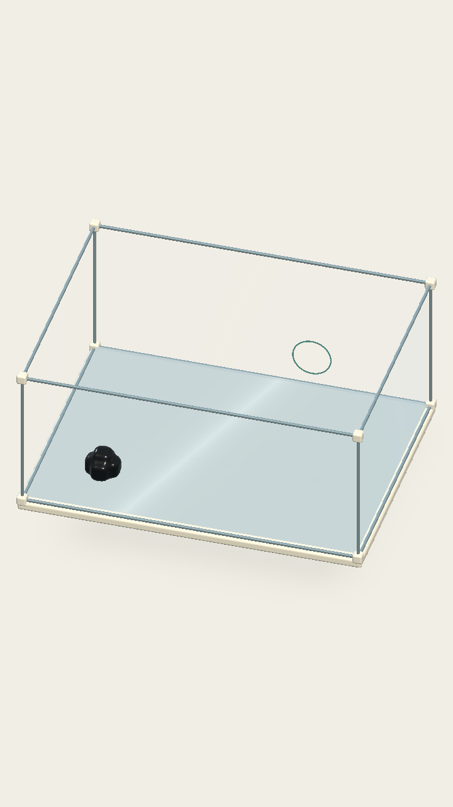
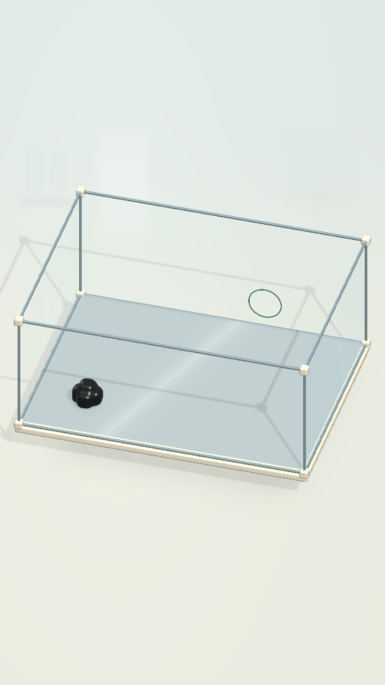
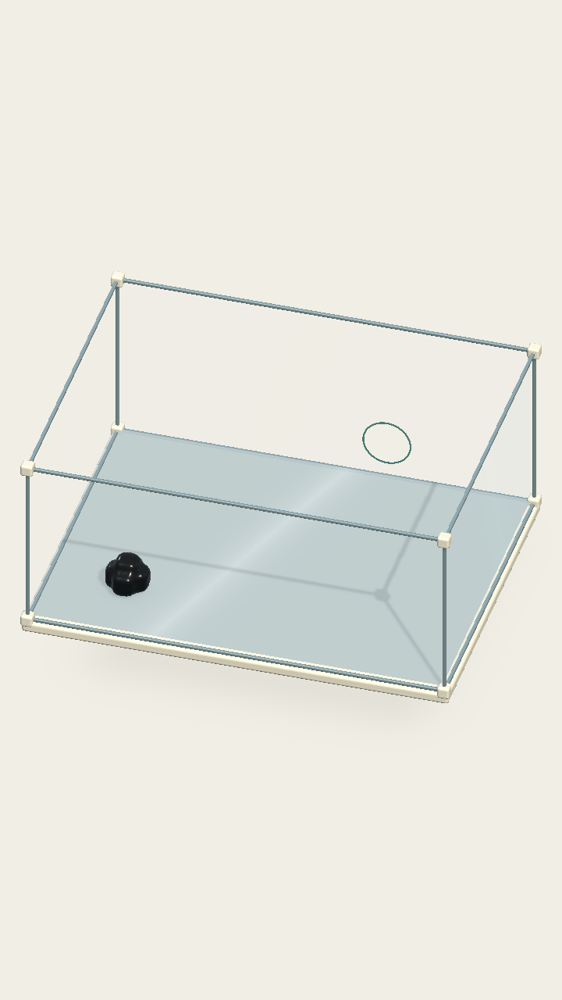
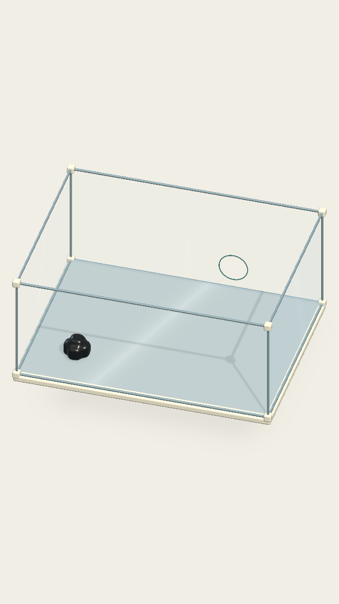

COghe · Chiều sâu trong hộp kính
Màn 01 thật trong Unity. Giữ nguyên bố cục, thao tác và vật lý. So sánh ánh sáng, chất liệu và nền; đây là bản thử, chưa áp dụng cho các màn còn lại.
C = B + nền chuyển sắc, hình thiết bị lab rất nhẹ và bóng trên bàn.


GốcC · Phòng labGốc · Nền kem, kính cũ
A · Bóng khung và bóng tiếp xúc
B · Phản xạ nhẹ, sứ và cơ thể dịu hơnC · Thêm không khí phòng lab Clip chạy thật trên Mac — chạm, di chuyển và thoát lỗ
Clip lấy mẫu khoảng 6–8 hình/giây để xem ánh sáng theo chuyển động, không dùng đánh giá độ mượt. Lượt đo FPS riêng không quay hình. HUD mờ do khóa nút trong replay tự động.
A · Ánh sángB · Chất liệuC · Phòng lab